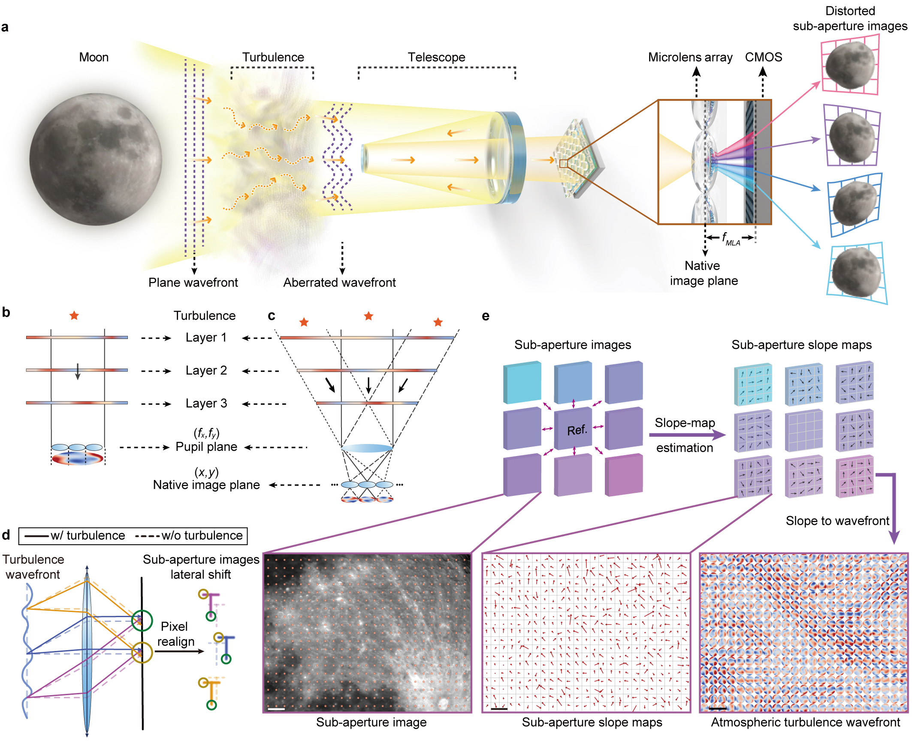
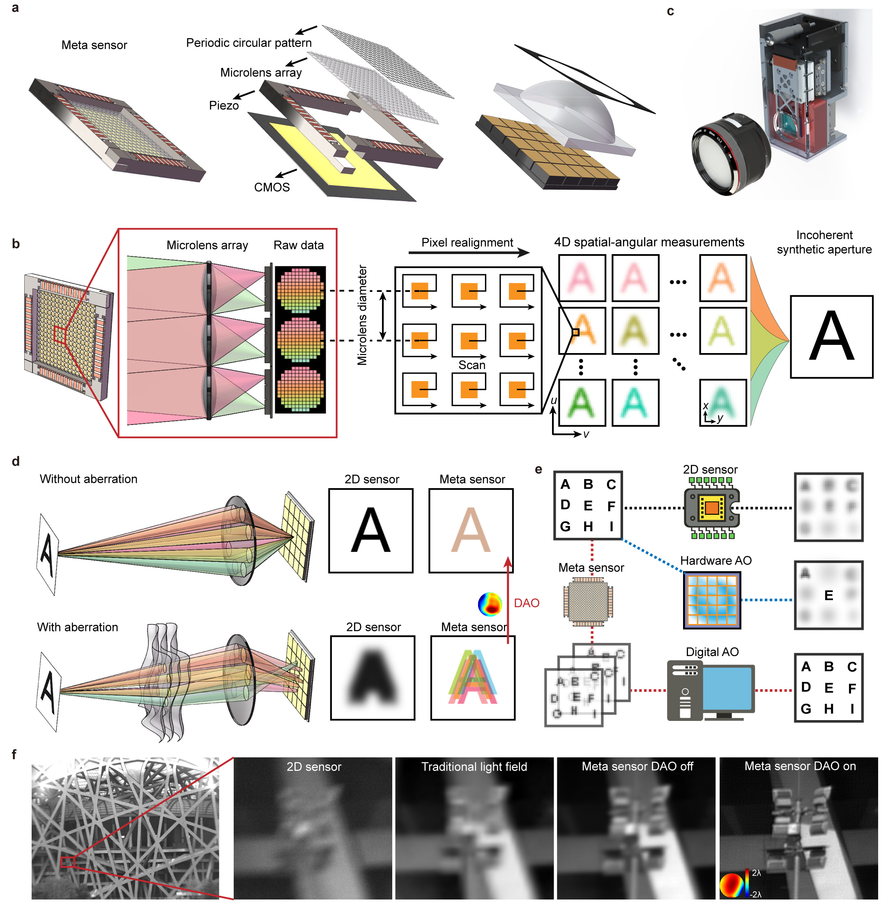

About Me
Building physics-informed AI that pushes the detection limits of real optical and astronomical instruments.
I am an Assistant Professor in the College of AI at Tsinghua University. I received my Ph.D. in Information and Communication Engineering from Tsinghua University in 2024, and was a Shuimu Scholar postdoctoral fellow in the Department of Automation before joining the College of AI.
My research advances Physics-informed AI for Science — a direction aimed at dissolving the boundary between physical hardware and computational intelligence. By embedding fundamental physical laws directly into neural network architectures, I pursue high fidelity and scientific trustworthiness even under extreme conditions. Conversely, by using AI models to guide and inspire hardware design, I aim to transcend detection limits imposed by classical physics. Together these establish a new paradigm for scientific discovery across optics, astronomy, and remote sensing.
I serve as a reviewer for Nature, IEEE TCSVT, Optica, and Optics Express, and as an Executive Editor for the special issue “Intelligent Optical Astronomical Observation Technology” in Laser & Optoelectronics Progress.
News
Research
Embedding optical and physical priors into neural architectures so that learned models stay faithful and trustworthy under extreme, low-signal conditions.
Meta-imaging sensors, light-field acquisition and digital adaptive optics — co-designing hardware and algorithms for aberration-corrected, gigapixel-scale imaging.
Wide-field wavefront sensing, turbulence prediction and self-supervised denoising that extend the detection limits of ground- and space-based telescopes.
Representative Publications

We present ASTERIS, an astronomical self-supervised transformer-based denoising algorithm that integrates spatiotemporal information across multiple exposures. ASTERIS improves detection limits by 1.0 magnitude at 90% completeness and purity while preserving the point spread function and photometric accuracy. Applied to deep JWST images, it identifies three times more redshift ≳9 galaxy candidates, with rest-frame UV luminosity 1.0 magnitude fainter than previous methods.

We develop a light-field-based wide-field wavefront sensor (WWS) achieving direct observation of atmospheric turbulence over 1,100 arcsec at 30 Hz, with turbulence dynamics predicted 33 ms ahead. Described by MIT Prof. Dirk Englund as the state-of-the-art real-time wavefront sensing chip.

We propose a meta-imaging sensor achieving gigapixel photography with a single spherical lens, enabling multisite aberration correction across 1,000 arcseconds on an 80-cm ground-based telescope. Recognized as one of China's Top 10 Optical Breakthroughs.
Honors and Awards
- 2025Young Elite Scientists Sponsorship Program of the Beijing High Innovation Plan
- 2024Tsinghua University Shuimu Scholars
- 2024Outstanding Doctoral Dissertation, Chinese Institute of Electronics (CIE)
- 2024Beijing Outstanding Graduates
- 2024Tsinghua University Outstanding Doctoral Dissertation
- 2024Tsinghua University Academic Rising Star (Top 10 per year)
- 2023National Scholarship
- 2023International Congress of Basic Science (ICBS) Frontiers of Science Award
- 2023Best Oral Presentation Award, Graduate Forum of the Chinese Optical Society
- 2023Tsinghua University Future Leaders Scholarship
- 2023Tsinghua University First-Class School Scholarship
- 2022Top 10 Optical Breakthroughs in China
- 2022Tsinghua University Future Leaders Scholarship
Education & Employment
Invited Talks
Teaching
Courses I teach at the College of AI will be listed here.
Prospective Students
I am looking for self-motivated students to join me at the College of AI, Tsinghua University, to work on physics-informed AI, computational imaging, and AI for astronomy.
- Ph.D. students — through Tsinghua's regular and direct-entry admission programs.
- Master's students — both research and professional tracks.
- Undergraduates & visiting interns — research projects, SRT, and thesis supervision.
Backgrounds in optics, computer vision, deep learning, astronomy, or signal processing are all welcome — what matters most is curiosity and persistence.
If you are interested, please email me with the subject line
[Prospective Student] Your Name, attaching your CV and transcript:
gyd@tsinghua.edu.cn